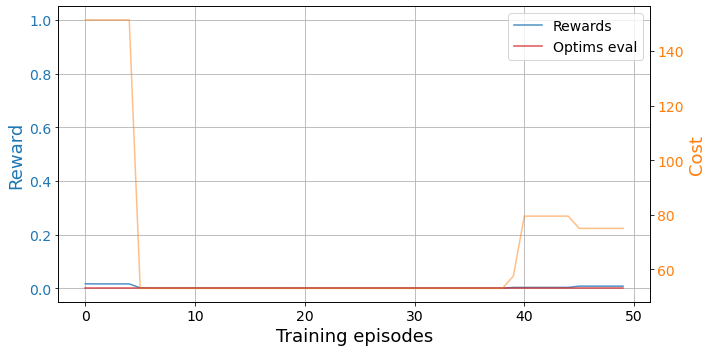
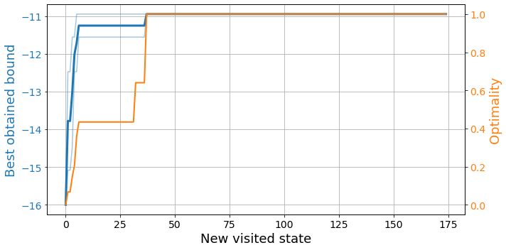
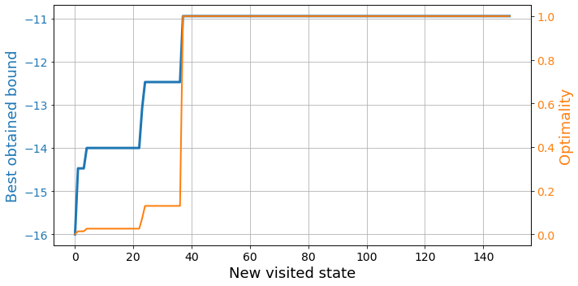
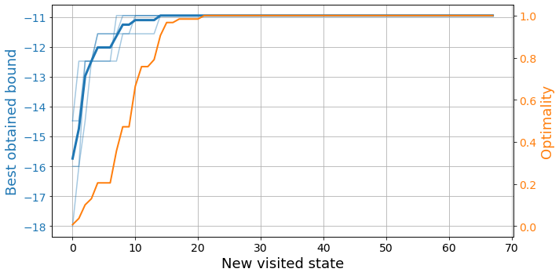

N = 6
chain = Chain1D(N)
b, j = 1, [i%3 for i in range(N)]
H = XXHamiltonian(chain, b, j)
budget = 300
env = SdPEnvironment(H, SdPEnergySolver(), budget)Training
To train the agents, we need a trainer. Reasonable, right?
Deep Q-learning trainer
The DQNTrainer handles the training of the deep reinforcement learning agent.
DQNTrainer
DQNTrainer (environment, n_agents=1, models=None, arch=<class 'bounce.agents.DQN'>, n_jobs=1, learning_rate=0.001, criterion=None, optimizer=None, batch_size=128, target_update=5, gamma=0.85, eps_0=1, eps_decay=0.999, eps_min=0.1)
Trainer for DQN agents
The DQNTrainer depends entirely on the train_agent function. This, in itself, relies on several inner functionalities shown below.
train_agent
train_agent (env, agent, episodes, time_steps=20, opt=None, best_ref=None, evaluate=True, break_opt=False, train_id=None, ckp=20, save=True)
Trains an agent given an environment.
To train an agent, provide the environment env containing the all the details about the problem that is to be solved and the agent, which is an initialized DQNAgent. The learning process is structured in a number of episodes of length time_steps. Every episode starts from the same initial state and the agent performs a trajectory through the state space of length time_steps. The agent gathers experience throughout the episode that then, once it has gathered enough, it is replayed to learn. The target network for double Q-learning is updated every agent.target_update learning episodes.
If evaluate is set to True, the agent performs an evaluation episode after each training episode. With this, we can keep track of the convergence of the agent by looking at the final state of this episode. For the evaluation, there can be provided the optional opt and best_ref, which are used to check whether the agent is reaching the optimal configuration and the relative performance with respect to it. When only considering the exploration capabilities, break_opt is used to stop the learning process once the agent has encountered the optimal state.
The optional inputs train_id, ckp and save are meant to handle data storage. With train_id we name the agent to save the training data in a consistent way. This is specially important when training agents in parallel, although DQNTrainer already handles this automatically. If no train_id is provided, the agent is assigned one at random. The training process is backed up every ckp training episodes and, if save is set to True, the resulting trained agent is saved at the end of the training process.
train_agent uses the following functionalities to make the code more readable.
check_optim
check_optim (opt, B, C)
Checks whether the current bound B and cost C match with the optimal ones.
evaluate_agent
evaluate_agent (agent, environment, time_steps)
Evaluates the agent in deterministic policy. Returns final reward, bound and cost.
get_reward
get_reward (environment, bound, cost, best_ref=None)
Returns the reward according to the environment.
step
step (state, agent, environment)
Take a step forward from state following the agent’s policy.
Let’s see how the trainer works. As usual, we start by defining the environment.
Then, we define the training parameters. In the training process if we know the optimal set of constraints, we can provide an opt reference consisting of a tuple with the optimal bound and cost. Furthermore, with full knowledge of the problem, we can provide the best_ref in the form of an np.array that contains the optimal bound and cost (like the opt), as well as the highest cost with which the optimal bound can be obtained.
episodes = 50
time_steps = 7
opt = (-10.94427, 127)
best_ref = np.array([*opt, 288])With these, we’re all set to create our trainer and start training our agent! Even more, we can train a few agents in parallel.
dqn = DQNTrainer(env, n_agents=2, n_jobs=2)
results = dqn.train(episodes=episodes, time_steps=time_steps, opt=opt, best_ref=best_ref)The results are split into training and exploration results. The training results focus on the actual training process of the agents, storing information after every training episode.
We can quickly visualize those with plot_trainings from bounce.utils.
plot_trainings(results['training'])
Here we see the reward and cost associated to the state at the end of an evaluation trajectory after every episode. We see that the agent needs some time to converge to a solution.
Conversely, the exploration results track the exploration process through the state space. This way, they store relevant data only after the agent visits a new state. This allows us to see how the agent progresses in its quest to find the optimal relaxation.
We can visualize those with plot_exploration from bounce.utils.
plot_exploration(results['exploration'])
Here we see the best bound obtained by the agents at every time step, as well as how close the states are to the global optimum. Remember that finding the optimal relaxation not only involves finding the best possible bound, but doing so with the least amount of parameters.
Breadth first search trainer
BrFSTrainer
BrFSTrainer (environment, n_agents=1, n_jobs=1)
Initialize self. See help(type(self)) for accurate signature.
explore_brfs
explore_brfs (env, agent, max_states, opt=None, best_ref=None, break_opt=False)
Space exploration with Breadth First Search (BrFS)
Neither the breadth first search nor the Monte Carlo algorithms require any actual training. However, we use the “trainers” to explore the state space with them. Therefore, we only receive exploration results.
bfs = BrFSTrainer(env)
results = bfs.train(150, opt=opt, best_ref=best_ref)plot_exploration(results)
Monte-Carlo trainer
MCTrainer
MCTrainer (environment, n_agents=1, n_jobs=1, beta=0.1)
Initialize self. See help(type(self)) for accurate signature.
explore_mc
explore_mc (env, agent, max_states, opt=None, best_ref=None, ckp=20, break_opt=False)
Space exploration with Monte-Carlo (MC)
bfs = MCTrainer(env, n_agents=4, n_jobs=2)
results = bfs.train(350, opt=opt, best_ref=best_ref)plot_exploration(results)